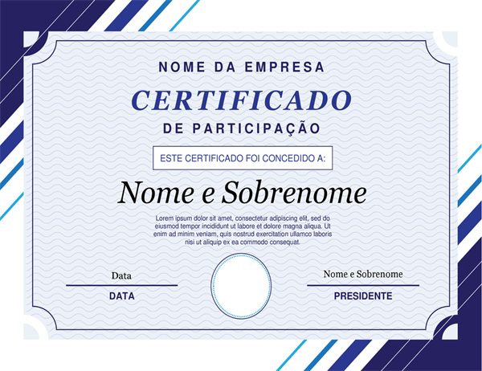

Quem Sou - Reinventarmos Sempre
E necessário criarmos algo novo, é possível nos reinventarmos a cada dia que passa. Pessoas mudam, Tecnologias mudam, Notícias mudam,
se não corremos atrás iremos perder algo importante, e esse algo nunca mais será retornado. Nessa vida foi nos dada uma oportunidade
de aproveitarmos e podemos escolher se passaremos desapercebidos ou estamos aqui para realizar alguma diferença. Existe uma transformação
e ela permite reunir e analisar dados entre máquinas e seres humanos, permite processos mais ágeis, rápidos, flexíveis e eficientes para
produzir novas ideias que agregam maior qualidade e valor. Não penso que a adoção da IA pode tirar o emprego de ninguém, máquinas realizam
o trabalho exaustivo a muitos anos (mesmo com os carros ainda existem cavalos, mesmo com computadores ainda existem programadores) não
devemos ter medo delas, ao contrário, vamos abraçar essa nova tecnologia e escolher dominá-las (ao invés de ser dominado). A tecnologia
desempenha um papel essencial em muitas áreas das nossas vidas, possibilita que o acesso às informações cada vez mais rápidas, produz
uma transformação no modo como consumimos e nos relacionamos com os dados. O ambiente de negócios se envolve cada vez mais nessa constante
evolução tecnológica. Incorporemos a automação e a conectividade pois cada dia elas se mostram que vieram para fazer parte desse algo
novo que espero que criemos.

Certa vez me falaram assim: Fernando você só escreve deveria aproveitar um pouco do seu tempo para fazer um curso! Gostei do conselho,
mas acho que a pessoa deveria me conhecer um pouco melhor para saber que todo dia (no mínimo) realizo um treinamento, tenho um hobby muito
estranho: Ao invés de assistir TV, jogar, ficar no YouTube vendo bobeira ou fazer nada, uso parte do meu tempo para aprender algo novo. Se
fosse de outra forma como acha que consigo escrever sobre tantos assuntos ou aprendeer algo tão rapidamente? Aqui estão
meus certificados.